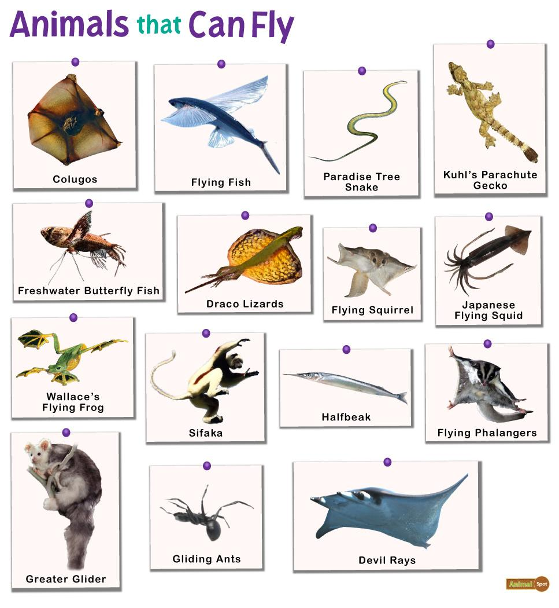

Aerial animals are species that spend a significant portion of their lives in the air. These animals have evolved various adaptations that allow them to glide, hover, or fly, enabling them to exploit aerial niches for feeding, mating, and migration. The ability to navigate the aerial environment offers advantages such as access to abundant food sources, avoidance of ground-based predators, and efficient long-distance travel
Key Characteristics
- 1. Flight Mechanisms: Birds, bats, and insects have developed distinct mechanisms for flight:
- 2. Navigation and Orientation: Aerial animals often cover great distances and must navigate effectively. Many birds use the Earth's magnetic field and positional cues from the sun and stars to migrate across continents.
- 3. Respiratory Efficiency: High-altitude flyers, especially birds, have highly efficient respiratory systems that allow for effective oxygen extraction, vital in thin air.
Types of Aerial Animals
- • Birds: Almost all birds are capable of flight, though some species, like ostriches and penguins, have evolved away from flight in favor of other adaptations.
- • Insects: Many insects, such as bees, flies, and mosquitoes, are adept fliers. Their ability to fly assists in various functions, from foraging to escaping predators.
- • Bats: Bats are particularly notable for their echolocation ability, which allows them to navigate and hunt in complete darkness.
Ecological Roles
Aerial animals play crucial ecological roles:
- • Pollinators: Many insects and birds, such as bees and hummingbirds, are vital pollinators for numerous plants.
- • Seed Dispersers: Birds and bats help in the dispersal of seeds, contributing to the spread of various plant species and the consequent diversity of ecosystems
- • Pest Control: Insectivorous birds and bats help control pest populations, providing a natural method of pest management.
Conservation Challenges
Aerial animals face several threats including habitat loss, climate change, and collisions with man-made structures like buildings and wind turbines. Light pollution also disorients nocturnal fliers like moths and bats. Conservation efforts for these animals include habitat protection, research on migration patterns, and the implementation of bird-safe building designs to prevent window collisions.